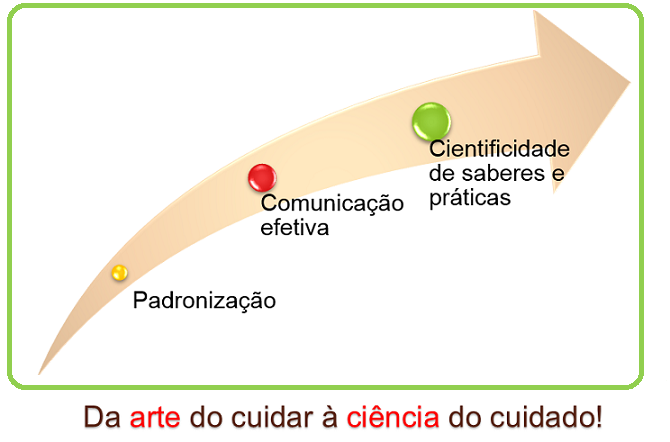

Sistematizar: que palavra é essa?
v.t. Reunir em sistema; reduzir a um corpo de doutrina – Dicionário Aurélio.
Sistematização pressupõe organização de elementos dinamicamente inter-relacionados, ou seja, uma sequência de passos para o alcance de um objetivo.
Quando pensamos em sistematização, logo lembramos de padronização, de organização...
Sistematizar a assistência de enfermagem significa, portanto, utilizar métodos e instrumentos para que os profissionais de enfermagem trabalhem em sistema, ou seja, que tenham uma linguagem comum, uma comunicação eficiente!
Mas para quê ter uma padronização dos métodos e instrumentos da enfermagem? Reflita um pouco sobre isso ao assistir esse vídeo que nos ensina um pouco sobre os problemas gerados por uma comunicação ineficiente!
A Sistematização da Assistência de Enfermagem (SAE) tem como principal objetivo superar estas problemáticas retratadas no vídeo! Entende-se que trabalhar em sistema pode proporcionar uma comunicação efetiva e, ainda mais, tornar a enfermagem uma profissão reconhecida pela cientificidade de seus saberes e práticas...
Diante deste conceito, Garcia e Nóbrega (2000, p. 2) defendem que a SAE deve ser entendida “não somente como um modo de fazer, mas como um modo de pensar a prática assistencial”.
A SAE não se caracteriza, portanto, como uma “receita teórica” a ser seguida pelos profissionais, com o fim único de alçar a excelência assistencial. Tal ferramenta deve ser pensada como um meio de integrar teoria e prática nas ações cotidianas da enfermagem, ultrapassando os simples, embora relevantes, registros das ações.
A literatura evidencia múltiplos benefícios proporcionados pela SAE nas experiências relatadas (ANDRADE; VIEIRA, 2005; AMANTE; ROSSETTO; SCHNEIDER, 2009; FRANÇA et al., 2007; GONÇALVES et al., 2007; NASCIMENTO et al., 2008; TRUPPEL et al., 2009):

A SAE é capaz de oferecer subsídios para o desenvolvimento de ações interdisciplinares e humanizadas de cuidado, estabelecendo pressupostos conceituais capazes de resgatar os aspectos científicos intrínsecos ao cuidado da enfermagem, uma vez que “a utilização de um marco conceitual embasa as atividades realizadas, descaracteriza o tecnicismo e a repetição de ações rotineiras” (MOURA; RABÊLO; SAMPAIO, 2008, p. 479).
Outro elemento fundamental proporcionado pela SAE configura-se como o resgate do cuidado individualizado, tendo em vista a abordagem holística do usuário e a consequente humanização de seu processo cuidativo. Isto porque, na prática cotidiana da enfermagem, é essencial “enxergar com olhos físicos e com olhos do coração, entender o não dito, confiar no ouvido, sociabilizar o saber e o fazer, refletir sobre as vivências, buscar o autoconhecimento e agir com presteza e sabedoria” (SILVA et al., 2002, p. 49).
A SAE, assim, é reconhecida internacionalmente como um verdadeiro instrumento de revolução da enfermagem!
Referências:
- Garcia TR, Nóbrega MML. Sistematização da assistência de enfermagem: há acordo sobre o conceito? Rev Eletr Enf. 2009; 11(2):233.
- Andrade JS, Vieira MJ. Prática assistencial de enfermagem: problemas, perspectivas e necessidade de sistematização. Rev Bras Enferm. 2005; 58(3):261-5.
- Amante LN, Rossetto AP, Schneider DG. Sistematização da Assistência de Enfermagem em Unidade de Terapia Intensiva sustentada pela Teoria de Wanda Horta. Rev Esc Enferm USP. 2009; 43(1):54-64.
- França FCV, Kawaguchi IAL, Silva EP, Abrão GA, Uemura H, Alfonso LM, et al. Implementação do diagnóstico de enfermagem na unidade de terapia intensiva e os dificultadores para enfermagem – relato de experiência. Rev Eletr Enf. 2007; 9(2).
- Gonçalves LRR, Nery IS, Nogueira LT, Bonfim ES. O desafio de implantar a sistematização da assistência de enfermagem sob a ótica de discentes. Esc Anna Nery Rev Enferm. 2007; 11(3):459-65.
- Nascimento KC, Backes DS, Koerich MS, Erdmann AL. Sistematização da assistência de enfermagem: vislumbrando um cuidado interativo, complementar e multiprofissional. Rev Esc Enferm USP. 2008; 42(4):643-8.
- Truppel TC, Meier MJ, Calixto RC, Peruzzo SA, Crozeta K. Sistematização da Assistência de Enfermagem em Unidade de Terapia Intensiva. Rev Bras Enferm. 2009; 62(2):221-7.
- Moura ACF, Rabêlo CBM, Sampaio MRFB. Prática profissional e metodologia assistencial dos enfermeiros em hospital filantrópico. Rev Bras Enferm. 2008; 61(4):476-81.
- Silva LWS, Nunes ECDA, Souza DM, Santos CS, Pereira LC. Sistematização da assistência de enfermagem - a práxis no ser-saber-fazer o cuidado. Cogitare Enferm. 2011; 16(3):560-4.


Que tal refletir um pouco sobre o conceito e objetivos da SAE?
A proposta é que você construa um Infográfico que destaque o seu aprendizado sobre esses dois elementos.
Mas o que é um Infográfico?
Trata-se de um elemento gráfico que combina textos, imagens e formas. Os infográficos ajudam a visualizar um conteúdo e são portanto uma boa solução para significar o aprendizado!
Recentes estudos publicados pela Alltwitter revelaram que a presença de um infográfico em um post aumenta para 834% as chances de ele ser compartilhado. De qualquer forma, quando você criar um infográfico, é importante que possua conhecimento a respeito das principais ferramentas à disposição para produzi-lo.
Por isso, separamos as 8 principais ferramentas para auxiliá-lo nesse processo criativo. Vamos conferir as dicas?
Visme
O Visme é uma ferramenta online e gratuita que permite a criação de infográficos, apresentações e conteúdos interativos. De fácil manipulação, a ferramenta possui templates de diversos tipos, que permitem sua edição e podem ser acessados online ou baixados. Além disso, possui uma variedade de fontes, vetores e fontes para você dinamizar ainda mais o seu conteúdo.
Infogr.am
Com mais de um milhão de infográficos criados por ele, o Infogr.am é um dos melhores aplicativos online para criação de peças descoladas. Com ele, você poderá criar tabelas, barras, infográficos inteiros em diferentes formatos e layouts. Para utilizá-lo, basta criar um login de usuário, mas atenção, você só poderá fazer o download do infográfico se comprar uma conta PRO.
Piktochart
Com designs incríveis e um poderoso editor, o Piktochart funciona como um tutorial que guia você passo a passo na construção do seu infográfico. Mais de 700 mil infográficos já foram criados pelos cerca de 400 mil usuários do aplicativo e, além disso, existem cerca de 100 temas prontos para você escolher. Você pode acessá-lo de graça, ou por meio de uma conta premium, que dá acesso a mais funcionalidades.
Visual.ly
O Visual.ly é uma ferramenta muito interessante para a criação de um infográfico por possuir alguns dos layouts mais inovadores. Uma comunidade formada por cerca de 50 mil desenvolvedores e que permite que você crie infográficos a partir dos templates disponíveis na plataforma. Para usá-lo, basta criar um login com uma conta do Facebook ou do Twitter e começar a editar.
Google Charts
Uma tentativa do Google de ajudá-lo a criar um infográfico, o Google Charts foi criado para desenvolvedores e possibilita a criação de tabelas, colunas e gráficos. Além de grátis, é compatível com o HTML5.
Easel.ly
Easel.ly é um aplicativo Beta que ajuda você a criar e exibir seus infográficos. Simples, com uma interface de fácil uso, o aplicativo possibilita que você crie infográficos simplesmente arrastando e soltando elementos que você achar necessário.
Venngage
Esse aplicativo permite que você crie infográficos de qualidade superior, auxiliando não apenas a criar layouts interessantes, mas ajuda na publicação e compartilhamentos do resultado em blogs e sites, registrando como as pessoas interagem com o seu infográfico.
Timeline JS
Se você precisa criar um infográfico que mostre uma linha do tempo de suas atividades online, puxando dados de todos os seus perfis sociais, incluindo Facebook, Twitter, YouTube, Flicker, entre outros.
Clicando no nome de cada ferramenta você tem acesso ao link direto para o site que as hospeda!
Bom aprendizado!